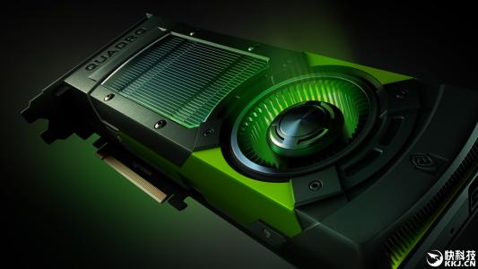

环境
- Ubuntu 16.04 内核版本低于4.13
1 | #查看所有内核版本 |
- 禁止系统自动更新
1 | #编辑/etc/apt/apt.conf.d/10periodic |
驱动安装
卸载原N卡驱动
1 | #apt-get安装的Nvidia-driver卸载 |
需要注意的是用runfile卸载时，一定是对应的驱动版本
禁用nouveau驱动
1 | #修改blackilist.conf文件 |
禁用图形化服务
1 | #关闭图形化 |
关闭图形化服务后，图形化界面会消失，可使用Ctrl-Alt+F1切入文本界面下
安装驱动
1 | #赋权runfile |
--no-x-check 非必须参数，表示安装驱动时不检查X服务
--no-nouveau-check 非必须参数，表示安装驱动时不检查nouveau
--no-opengl-files 必须参数，表示仅安装驱动文件，不安装OpenGL文件
必选参数解释：因为NVIDIA的驱动默认会安装OpenGL，而Ubuntu的内核本身也有OpenGL、且与GUI显示息息相关，一旦NVIDIA的驱动覆写了OpenGL，在GUI需要动态链接OpenGL库的时候就引起问题。
验证驱动安装
重启机器后验证
1 | #获取GPU信息列表 |
驱动升级
1 | #根据集群查询没有运行job的节点，进行不可调度操作 |
以上是基于K8s集群正在使用环境进行升级驱动，宗旨是确保无驱动占用进程下进行升级